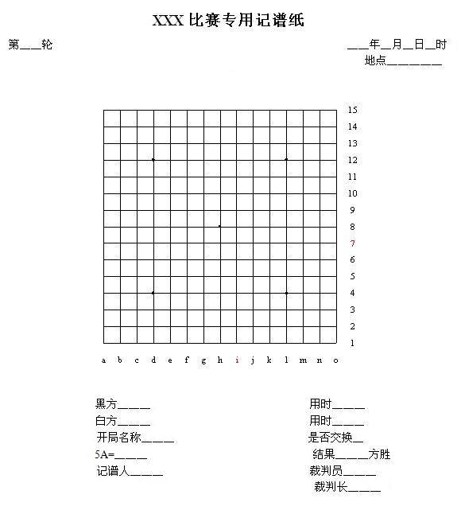

五子文化与知识(11)：先后手及计时规则
#1 五子文化与知识(11)：先后手及计时规则 作者：茗弈宽容 发表时间：2010-3-25 10:13:01
中国棋院在线讯 《五子棋知识》第十四至十六章详细介绍了先后手的确定、记录及计时等知识，详见如下内容。十四、怎样确定谁先走
怎样确定对局双方谁先走棋，在规则中被称为“先后手的确定”。实际上就是用一定方法确定一下谁执黑棋先行。这里指的“先手”、“后手”又与下棋中的技术性“先手”、“后手”不是一个概念。这里的先后手是专指开局时的先走方、后走方。再有，这里的黑棋先行是指对局开始前来确定的。不是指三手可交换后的黑方、白方。
由对局双方来确定先后手的对局，确定先后手是用“猜先”来完成的。方法是，对局双方各握若干黑、白棋子于手中，合计数为奇数，则原黑、白方不变；合计数为偶数，则双方交换黑白棋。称为“双变单不变”，区别于围棋的“单变双不变”。
规则上规定，可以由裁判员用挑边器进行猜先，中猜者有3种选择权利。A.使用黑棋。B.使用白棋(专指对局开始时的黑、白棋)。C.要求对方先行选择，则对方必须先行选择使用黑棋还是白棋。
单循环制比赛先后手是按规则上的循环赛对局表来排定各轮对局者，不需棋手猜先。大多数的积分循环制比赛的先后手是由裁判按规则事先抽编好了的，也有轮轮猜先的。淘汰制的比赛必须轮轮猜先，场场猜先了。
在此要提醒参赛棋手，先后手的错误，无论是裁判员编排上的错误，还是棋手自己使错了黑白棋，一旦白4之子落在盘面上，均不可做为重赛的理由。之后的对局，发现未发现错误，比赛必须继续进行，结果有效。在以后轮次的编排时，均按此轮次先后手正确的假想下进行配对和先后手编排。
十五、记录
一般正式比赛，要求对局棋手是要做记录的。就是要在规定的记谱纸上清晰、准确、完整、及时地用代数记录法逐着记录双方行棋着法。黑棋用奇数画圈记录，如○3○7○21等；白棋用偶数记录，如4 . 8 . 22等(中间有 pass现象除外)。要求在自己走下一着之前记完前一回合双方的着法。如果出现记录不齐或较混乱的现象，裁判员有权要求棋手用自己的时限时间补齐或誊清记录，因而要影响自己行棋思考时间、情绪和思路，所以，我们每一个棋手都应在平时养成认真记录的好习惯。如果棋手所剩时限不足5分钟或到了读秒阶段，可暂免记录，但须在终局后补齐记录。
比赛时所用的记谱纸，通常还要在谱纸下半部分加上明细部分，用来记录记谱时的日期、时间、地点、开局名称、是否交换、黑白方姓名、比赛用时、比赛结果、棋手和裁判员签字等。5A处填写的是五手两打法时去掉的黑子的点的位置坐标。
记谱纸举例

十六、计时
你能准确无误地说出五子棋项目的类别归属吗？五子棋等棋类项目属于以棋盘和棋子为中介的人和人之间用智力直接对抗性的体育项目。既然归属体育，那它就不是表演项目，而是比赛项目，所以，我们五子棋爱好者很多人都会参加一些社会比赛的。为了保证比赛的连续性，提高比赛效率，规则对某些方面进行了一些时间限制的规定，称为时限。时限分比赛时限、迟到时限和申诉时限。
(一)比赛时限
比赛时限可分每方30分钟到5小时不等，但一般要求一天内必须结束。有些比赛受条件限制，也可采用双方共用时限的方法，时限时间约是单方时限的双倍。双方共用时限到时后，可用限时走棋(几分钟之内走完若干手棋)或到时读秒的后续手段，直到该局结束。读秒时限，多采用1分钟制，凡一着棋用时不足1分钟，可不计时间，到1分钟则判负。
(二)迟到时限
比赛前，组织者都会规定迟到时限，一般为15分钟，每场比赛迟到时限一到，未到场的棋手均按弃权判负。
/*760*90，创建于2012-2-9*/ var cpro_id = 'u761865';
#2 Re:五子文化与知识(11)：先后手及计时规则 作者：心上人 发表时间：2010-3-25 14:30:20
这样的计时感觉不错